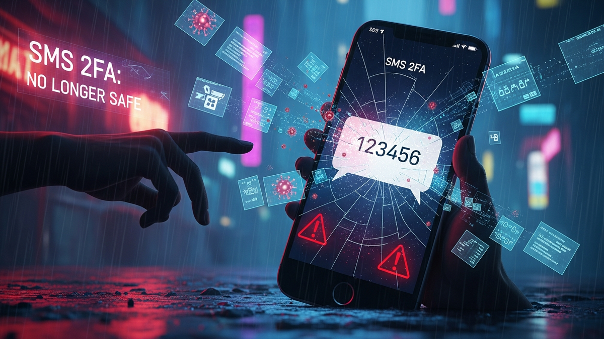

In an increasingly digital world, the bedrock of our online security hinges on robust authentication. For years, Two-Factor Authentication (2FA) has been lauded as the essential second line of defense, adding a crucial layer beyond a simple password. Among its various implementations, SMS-based 2FA, where a one-time passcode (OTP) is sent to your mobile phone, became the most ubiquitous. It was easy, accessible, and seemingly effective, offering a comforting sense of enhanced security to millions. However, what was once considered a significant security upgrade has, over time, transformed into a perilous vulnerability. The very convenience that made SMS 2FA so popular has become its Achilles' heel, as sophisticated attackers have found numerous ways to circumvent this widely adopted method. The digital landscape has evolved, and with it, the threats. It is no longer enough to simply have 2FA; the type of 2FA matters immensely. This article delves into the critical flaws inherent in SMS 2FA, revealing why this method is no longer a safe bet for protecting your digital life and urging a decisive shift towards more resilient alternatives.
For a significant period, SMS-based Two-Factor Authentication stood as the recommended best practice for enhancing account security. The premise was simple yet compelling: even if an attacker obtained your password, they would still need physical access to your phone or the ability to intercept a text message to gain entry. This additional step provided a tangible sense of security, elevating the barrier for malicious actors and offering users peace of mind. Financial institutions, social media giants, and countless other online services adopted SMS 2FA with enthusiasm, embedding it deeply into their security protocols and encouraging, if not mandating, its use.
However, this widespread adoption inadvertently created a massive target. Attackers, driven by the lucrative potential of compromising accounts, began to meticulously probe the weaknesses inherent in the SMS delivery mechanism and the broader telecommunications infrastructure. They understood that the strength of any security chain is determined by its weakest link, and SMS 2FA, despite its initial promise, proved to have several critical vulnerabilities that could be exploited without direct physical access to a user's device. The illusion of impenetrable security began to crack under the weight of these evolving threats.
The core problem lies in the fact that SMS messages were not designed with high-security authentication in mind. They travel over a complex, interconnected global network of cellular carriers, a network built for communication, not for cryptographic integrity. This underlying architecture introduces multiple points of failure and interception opportunities that are largely outside the control of the end-user or even the service provider. Unlike cryptographic keys generated on a device or a dedicated hardware token, an SMS OTP is a shared secret transmitted across a public, albeit managed, network. This fundamental difference is what allows sophisticated attackers to bypass what once seemed like an insurmountable barrier.
Furthermore, the human element, often a critical vulnerability in any security system, plays a significant role in the compromise of SMS 2FA. Social engineering tactics, coupled with technical exploits, can trick individuals into divulging sensitive information or manipulate service providers into rerouting text messages. The very simplicity and ubiquity of SMS, which initially made it so appealing, now contribute to its downfall, as users have grown accustomed to receiving and acting upon text messages without always scrutinizing their origin or intent. This comfort can be exploited, turning a trusted communication channel into a vector for attack. The transition from a robust security measure to a critical vulnerability highlights a fundamental truth in cybersecurity: security is not static. What is secure today may be dangerously exposed tomorrow, especially when the underlying technology was never designed for the demands placed upon it.
The primary technical exploits rendering SMS 2FA unsafe are SIM swapping and SS7 attacks, both of which bypass the intended security by intercepting the crucial one-time passcodes (OTPs). Understanding the mechanics of these attacks is vital to grasping the severity of the threat.
SIM Swapping, also known as a SIM port-out scam, is a social engineering attack that specifically targets your mobile phone number. The attacker's goal is to convince your mobile carrier to transfer your phone number to a new SIM card under their control. This is typically achieved through a combination of stolen personal information and cunning deception. Attackers might gather details about you from data breaches, social media, or even by calling your carrier pretending to be you to "verify" information. Once they have enough data – such as your name, address, date of birth, or even a recent account activity – they contact your mobile provider, claiming their phone was lost or damaged and requesting a SIM transfer to a new device (which they possess). If successful, your legitimate SIM card becomes deactivated, and all incoming calls and text messages, including your vital 2FA OTPs, are rerouted to the attacker's device. With access to your phone number and your previously stolen password, they can then log into your banking, cryptocurrency, social media, or email accounts, initiating password resets or direct transactions using the intercepted SMS codes. The insidious nature of SIM swapping lies in its ability to completely hijack your digital identity without ever touching your physical phone, leaving you suddenly disconnected and vulnerable.
The second major vulnerability stems from the global telecommunications network itself, specifically through exploits of the Signaling System No. 7 (SS7) protocol. SS7 is the set of telephony signaling protocols that are used to set up and tear down most of the world's public switched telephone network (PSTN) calls. It also performs number translation, local number portability, prepaid billing, and other short message service (SMS) and multimedia messaging service (MMS) applications. Essentially, SS7 is the backbone that allows different mobile networks worldwide to communicate with each other, routing calls and texts. While designed for efficiency and interoperability, it has critical security flaws. Attackers, often nation-states or sophisticated criminal groups, can gain access to SS7 networks, sometimes through compromised smaller carriers or by purchasing access from legitimate providers who might not fully understand the implications. Once an attacker has access to the SS7 network, they can perform a variety of malicious actions. Critically for SMS 2FA, they can redirect SMS messages intended for your phone number to their own device, effectively intercepting OTPs before they ever reach you. They can also track your location, listen to your calls, and even initiate calls from your number. The danger of SS7 attacks is particularly high because they operate at a network level, meaning there's little an individual user can do to protect themselves beyond abandoning SMS 2FA entirely. Unlike SIM swapping, which often requires social engineering, SS7 attacks are purely technical exploits of the underlying infrastructure, making them incredibly difficult to detect and prevent by the average user. Both SIM swapping and SS7 attacks demonstrate that the problem with SMS 2FA isn't just about human error; it's deeply rooted in the inherent vulnerabilities of the telecommunications systems we rely upon.
While technical exploits like SIM swapping and SS7 attacks target the infrastructure, a significant portion of SMS 2FA compromise stems from the oldest trick in the book: human manipulation. Phishing, in its various forms, remains an incredibly potent weapon against SMS 2FA, leveraging trust and urgency to trick users into divulging their one-time passcodes (OTPs) or credentials. This category of attack preys on the user's perception of security and their habitual interactions with digital services, turning their own actions against them.
One prevalent method is Smishing, which is phishing conducted via SMS. Attackers craft convincing text messages that appear to originate from legitimate organizations like banks, social media platforms, or even government agencies. These messages often contain urgent warnings—a "suspicious login attempt," a "package delivery issue," or an "account suspension"—and include a malicious link. When clicked, this link directs the user to a spoofed website that meticulously mimics the legitimate service's login page. Unsuspecting users, driven by fear or curiosity, enter their username and password. Crucially, because the attacker wants to complete the login in real-time, the fake site then prompts for the 2FA OTP, often stating it's for "verification" or "security purposes." As soon as the user enters the SMS code, it's immediately relayed to the attacker, who uses it to log into the actual account. By the time the user realizes they've been duped, their account has already been compromised.
Another sophisticated variant involves real-time MFA phishing kits or reverse proxies. These advanced tools sit between the victim and the legitimate website, acting as an intermediary. When the victim attempts to log in, the phishing site captures their credentials and simultaneously forwards them to the actual service. When the legitimate service requests an SMS OTP, the phishing site prompts the victim for it. The moment the victim enters the OTP, the phishing site relays it to the legitimate service, completing the authentication process for the attacker. This "man-in-the-middle" approach is incredibly effective because the victim is interacting with what appears to be a live, fully functional login flow, making it difficult to detect the deception without close scrutiny of the URL or other security indicators.
Beyond text-based phishing, Vishing (voice phishing) can also be used to compromise SMS 2FA. In these scenarios, attackers impersonate customer support representatives from banks, tech companies, or other services. They call victims, fabricating a story about a security incident or a need to "verify" account details. During the call, they might claim to be sending a "verification code" to the user's phone, which is, in reality, a legitimate 2FA OTP triggered by the attacker trying to log into the user's account. The attacker then convinces the victim to read out this code over the phone, effectively handing over the crucial second factor. The power of social engineering in these attacks lies in the psychological manipulation, exploiting trust, urgency, and the human tendency to comply with authority figures or perceived service agents. These methods demonstrate that even when the underlying technology of SMS delivery is not directly compromised, the human element remains a significant attack surface, making SMS 2FA a vulnerable target for determined and creative attackers.
The fundamental issue underpinning the insecurity of SMS 2FA lies in its reliance on the global telecommunications infrastructure. This vast, complex, and interconnected network, while marvelously efficient for communication, was never designed with the stringent security requirements of modern digital authentication in mind. Unlike dedicated cryptographic systems or secure hardware, the telecom network inherently introduces a multitude of vulnerabilities and points of failure that are beyond the control of individual users or even the online services they are trying to protect.
One of the most critical weaknesses is the lack of inherent end-to-end encryption for SMS messages. While some messaging apps offer encryption, standard SMS operates over channels that are generally unencrypted, making the content of these messages vulnerable to interception. This means that an OTP, a critical piece of authentication data, travels across various network segments in plain text or in easily decipherable formats. If an attacker gains access to any point along this transmission path—whether through a compromised carrier, an SS7 exploit, or other network-level surveillance—they can read the OTP as it passes through. This is a stark contrast to modern encryption standards where data is scrambled from the sender's device to the recipient's device, rendering it unintelligible to anyone in between.
Protect your identity and browse privately with Surfshark One - the all-in-one security suite.
GET 60% OFF SURFSHARK NOWMoreover, the centralized nature of mobile carriers represents a significant single point of failure. Each carrier manages a massive database of customer accounts, phone numbers, and SIM card details. While these systems are protected, they are not impervious to attack. A successful breach of a single carrier's internal systems could expose countless customer records, including the data necessary for SIM swapping. Furthermore, the sheer number of employees within these large organizations creates a broader attack surface for social engineering. An attacker might target a lower-level employee with phishing or bribery to gain access to customer accounts or initiate SIM transfers, circumventing the robust security measures designed to protect the network itself.
The global interconnectivity of the SS7 network further exacerbates these issues. Because SS7 allows carriers worldwide to communicate and route traffic, a vulnerability exploited in one less secure or less regulated carrier's network can potentially affect users on entirely different, otherwise secure, networks. This means that even if your local carrier has excellent security, your SMS messages could still be intercepted if another carrier on the SS7 routing path has a weakness that an attacker can exploit. This creates a vast, interconnected web of potential vulnerabilities, making it nearly impossible for any single entity to guarantee the security of an SMS message from sender to receiver across all possible routes.
Finally, the regulatory landscape surrounding telecommunications varies wildly across different countries. Some regions have more stringent security requirements and oversight than others. This disparity means that the global telecom infrastructure operates with a patchwork of security standards, creating fertile ground for attackers to find and exploit the weakest links. For users, this translates into a diminishing return on their security efforts when relying on SMS 2FA. The perceived convenience and ubiquity of SMS come at the cost of relying on an outdated and inherently insecure communication channel for critical authentication, making it a liability rather than a robust defense in the face of modern, sophisticated cyber threats.
Given the inherent vulnerabilities of SMS 2FA, it's imperative for individuals and organizations to transition to more robust and secure authentication methods. Fortunately, several superior alternatives offer significantly enhanced protection against the types of attacks that compromise text-based OTPs. These solutions leverage stronger cryptographic principles, reduce reliance on third-party infrastructure, and are more resilient to phishing and social engineering tactics.
Perhaps the most widely accessible and recommended alternative is the use of authenticator apps, often referred to as Time-based One-Time Password (TOTP) apps. Applications like Google Authenticator, Authy, and Microsoft Authenticator generate unique, time-sensitive codes directly on your device. When you enable TOTP 2FA for an account, you scan a QR code or enter a secret key, which seeds the app with the necessary cryptographic information. From then on, the app generates a new code every 30 or 60 seconds, independently of any network connection. The crucial advantage here is that these codes are never transmitted over an insecure network; they are generated locally and only verified by the service provider. This eliminates the risk of SIM swapping, SS7 attacks, and most forms of SMS phishing, as there's no text message to intercept. While these apps still require the user to manually enter the code, they represent a substantial leap in security over SMS.
For the highest level of security and phishing resistance, hardware security keys are the gold standard. Devices like YubiKey, Google Titan Security Key, and others that support the FIDO (Fast Identity Online) U2F (Universal 2nd Factor) or WebAuthn standards offer robust cryptographic protection. When you use a hardware key, you typically plug it into a USB port or tap it to your device (via NFC/Bluetooth) and press a button to authenticate. These keys perform cryptographic operations directly with the website or service, verifying its authenticity and ensuring that you are not on a phishing site. If an attacker presents a fake login page, the hardware key simply won't authenticate, making them virtually immune to phishing. They are also immune to SIM swapping and SS7 attacks because they don't rely on phone numbers or text messages. While they require a physical device, their unparalleled security makes them ideal for protecting critical accounts, especially for individuals dealing with high-value assets like cryptocurrency or sensitive data.
Another increasingly prevalent and secure method involves on-device biometrics, such as fingerprint scanners (Touch ID, Windows Hello) and facial recognition (Face ID). When implemented correctly, these methods leverage secure enclaves within your device to store and process biometric data, which is then used to unlock a cryptographic key that authenticates you to a service. The biometric data itself never leaves your device, and the authentication process is tied specifically to that device. While not a standalone 2FA in the traditional sense, when combined with a strong password or passwordless systems, biometrics offer a seamless and highly secure authentication experience, particularly for mobile applications. It's important to note that biometrics on their own are often considered a "something you are" factor, and when combined with a password ("something you know") or a device ("something you have"), they create a powerful multi-factor authentication system.
Finally, while not as secure as TOTP apps or hardware keys, email-based 2FA can sometimes be a marginally better alternative to SMS 2FA, provided your email account itself is extremely well-secured with strong, non-SMS 2FA. However, email accounts are also frequent targets for phishing and account takeover, so this should only be considered a temporary or last-resort option if stronger methods are unavailable. The key takeaway is clear: moving beyond the vulnerabilities of SMS requires embracing authentication methods that are designed for the modern threat landscape, prioritizing cryptographic strength, and minimizing reliance on easily compromised communication channels.
Migrating away from SMS 2FA is not just a recommendation; it's a critical security imperative. For both individuals and organizations, implementing stronger authentication defenses requires a proactive and systematic approach. The good news is that numerous tools and strategies are readily available to secure digital identities more effectively than traditional text-message verification.
The cornerstone of a robust 2FA strategy should be the adoption of hardware security keys. Tools like the YubiKey from Yubico and the Google Titan Security Key are prime examples. These devices support industry standards such as FIDO Universal 2nd Factor (U2F) and WebAuthn, which provide strong, phishing-resistant authentication. Users simply plug the key into a USB port, tap it via NFC, or connect via Bluetooth, then press a button to confirm their identity. This process leverages public-key cryptography, where the key generates a unique cryptographic signature for each login attempt, proving both possession of the key and the legitimacy of the website. Because the key only responds to legitimate sites, it effectively neutralizes phishing attacks. For organizations, deploying hardware keys for employees accessing sensitive systems offers an unparalleled layer of protection against account takeover, especially for privileged accounts. Many services, including Google, Microsoft, Facebook, and various cryptocurrency exchanges, support these keys, making them a versatile choice for personal and professional use.
For a widely accessible and user-friendly alternative, authenticator applications are indispensable. Popular choices include Authy, Google Authenticator, and Microsoft Authenticator. These apps generate Time-based One-Time Passwords (TOTP) directly on your smartphone. The setup typically involves scanning a QR code provided by the service you're securing. Once set up, the app generates a new 6-8 digit code every 30-60 seconds, even without an internet connection. This eliminates the need for SMS transmission, thus bypassing SIM swapping and SS7 vulnerabilities. While Authy offers cloud backup and multi-device sync, Google and Microsoft Authenticator are often preferred for their simplicity and integration with their respective ecosystems. When adopting these apps, it's crucial to securely store the "recovery codes" or "secret keys" provided during setup, as these are essential for restoring access if your phone is lost or damaged. Organizations should encourage or mandate the use of these apps, providing clear instructions and support for employees transitioning away from SMS.
Furthermore, integrating strong 2FA with a reliable password manager can significantly enhance overall security. Tools like LastPass, 1Password, and Bitwarden not only... and implement these strategies to ensure long-term success.
In summary, staying ahead of these trends is the key to business longevity and security. By following this guide, you maximize your growth and ensure a stable digital future.
Don't wait for the headlines. Our Private Telegram Channel delivers real-time AI security updates and digital wealth strategies before they go viral. Stay protected. Stay ahead.
⚡ JOIN THE 1% NOWNo sign-up required. Instantly check risks, analyze AI text, or calculate your digital finances.